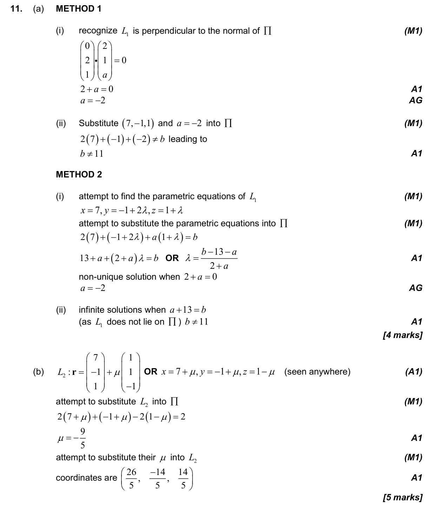
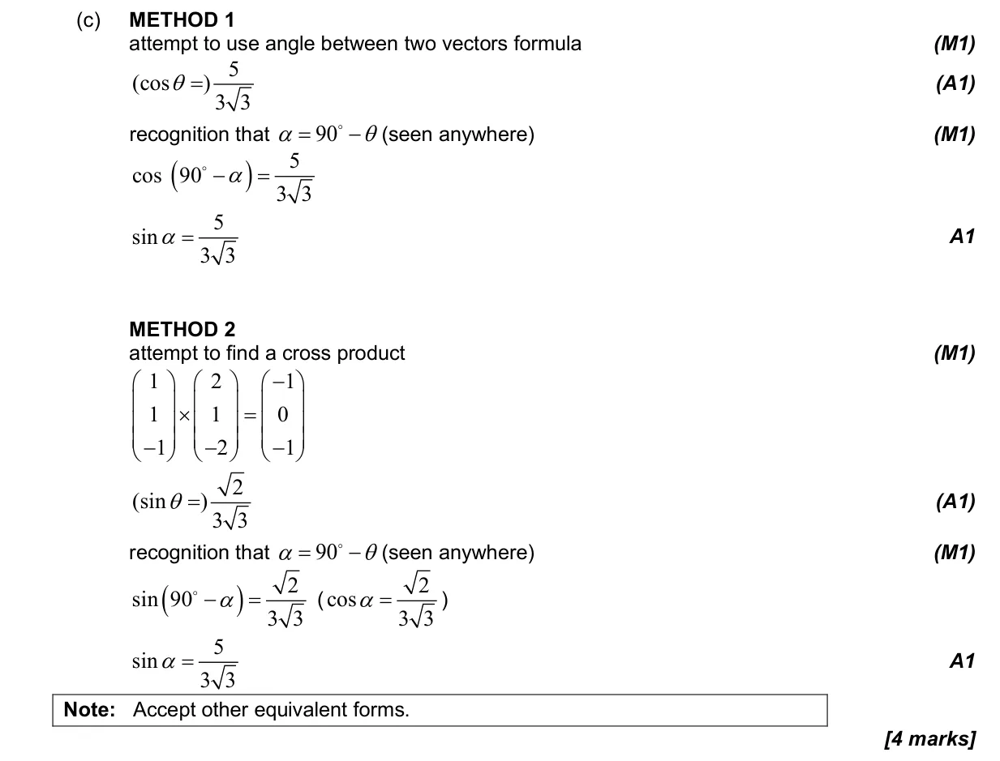
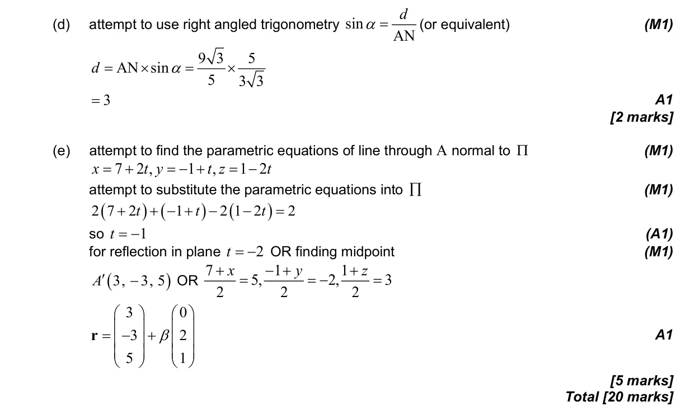

3.18 Intersections and angles between lines and planes3.14 Vector equation of a line in two and three dimensions3.13 The scalar product and the angle between vectors3.17 Vector and Cartesian equations of a plane3.2 2D and 3D trigonometry, sine rule, cosine rule and area
Question

Markscheme


